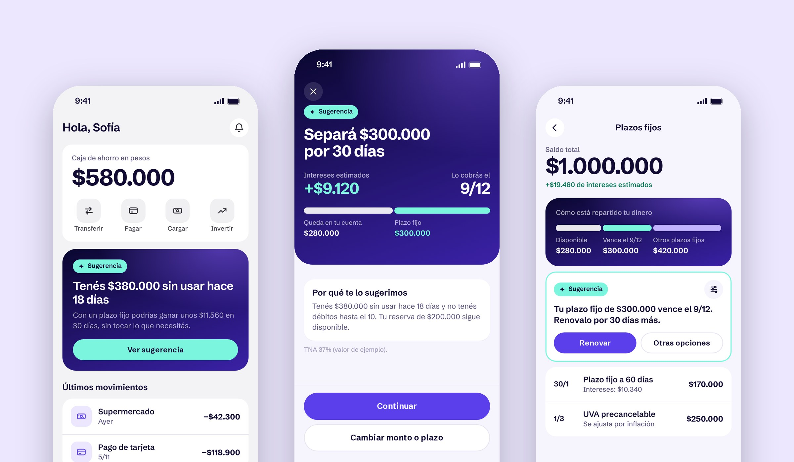
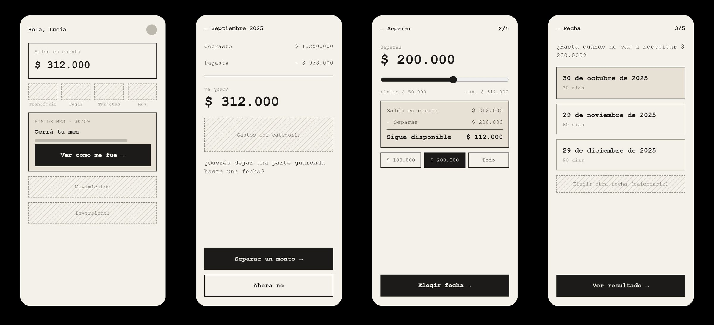
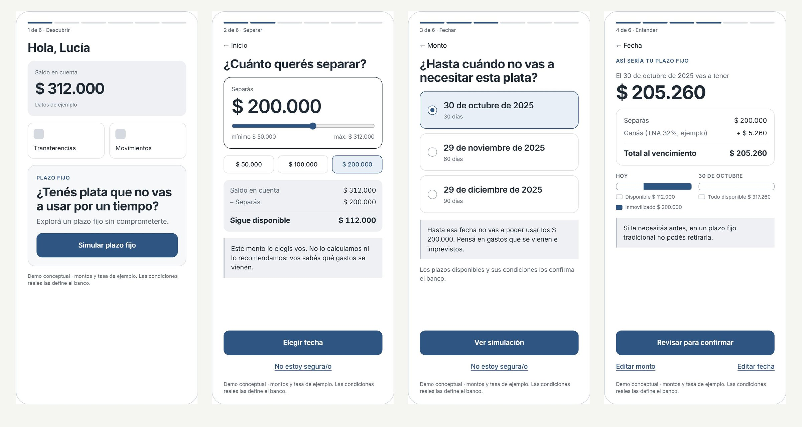
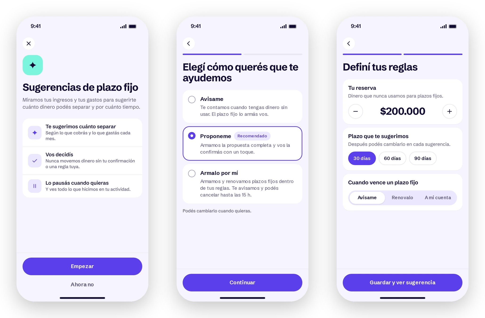
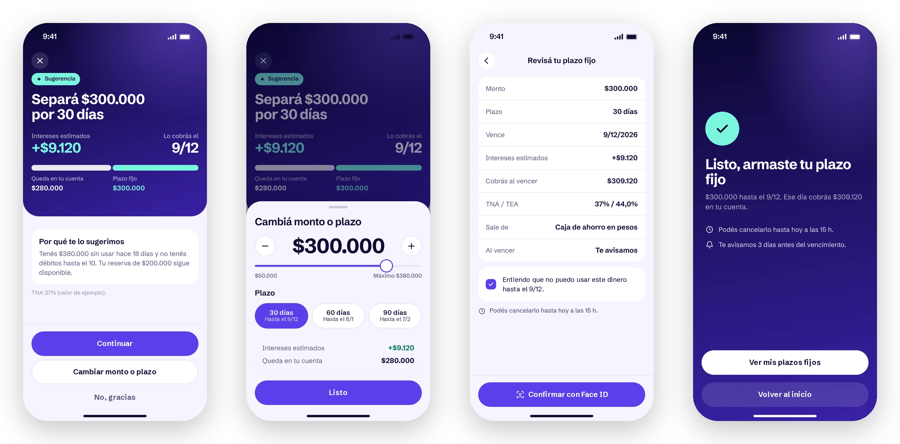
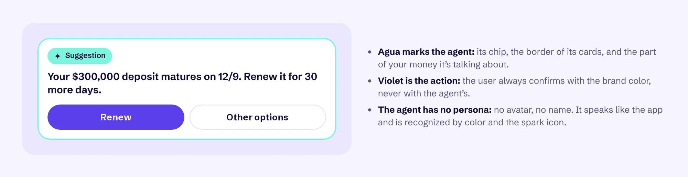
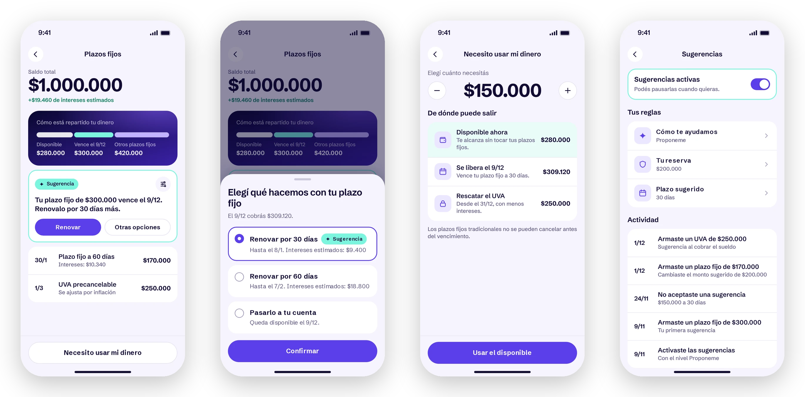
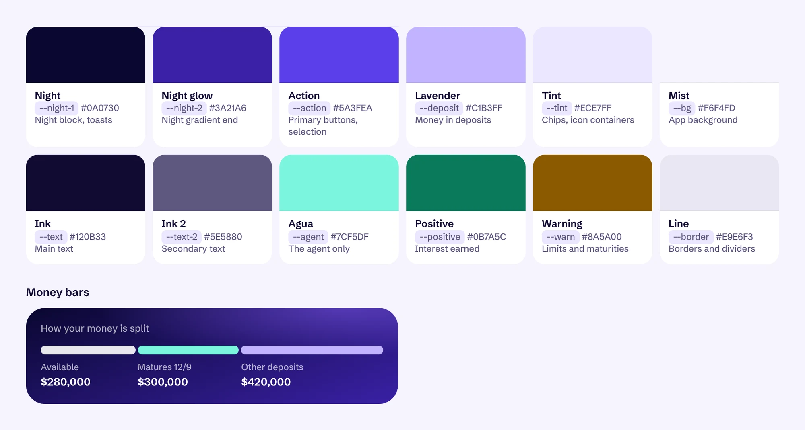
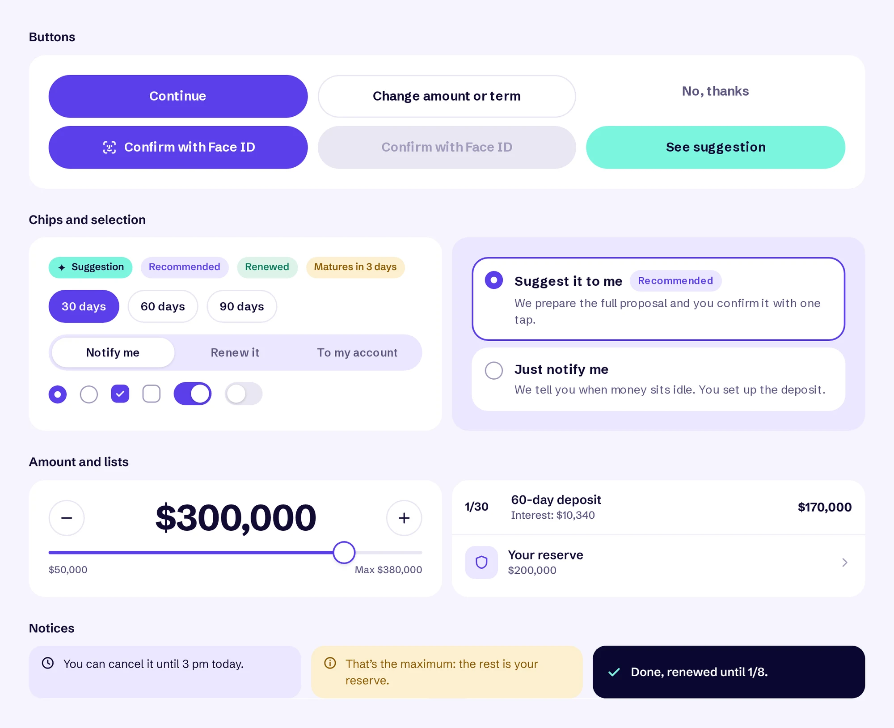

Proof of concept · Fintech · Savings
Term deposits, with an agent that does the math.
A proof of concept for one of Argentina’s largest banks. Instead of asking people to work out on their own how much money they can set aside and for how long, an agent suggests it and the person decides.

Context & Problem
Many people keep their savings outside the bank.
A term deposit is simple on paper: you leave money in the bank for a fixed time and get it back with interest you know in advance. Still, many people prefer to keep their savings elsewhere, and in digital banking it competes at a disadvantage against more agile options, like money market funds or interest-bearing accounts.
There was no research, so I started by writing down hypotheses that could later be tested and proven wrong.
Findability
It lives under Investments, next to stocks and crypto, and doesn’t feel meant for small amounts.Value
It’s not clear how much you earn, or whether it beats leaving the money where it is.Triggers
The app never brings it up, even when money sits idle for weeks or a bonus comes in.Liquidity
People fear not having the money if something unexpected comes up.First exploration
A guided flow to decide before committing.
My first idea wasn’t to sell term deposits better, but to solve the moment before: helping people recognize what part of their money they can set aside without feeling they lose control.
- 01 Your amount first, then your timeHow much you set aside and what stays available, before any rates.
- 02 Three concrete dates30, 60 or 90 days instead of an open calendar.
- 03 A way out at every step“I’m not sure”, without pressure, and a checkbox to acknowledge the money is locked.


The flow answered value and liquidity well, but not the other two hypotheses: it still depended on people finding it, doing the math and deciding on their own.
The pivot
We chose an agent, to make the decision easier.
Instead of the person doing the math, the app does it: it looks at income and expenses, spots idle money and suggests how much to set aside and for how long. The person still decides. The design challenge stopped being the form and became trust.
Findability
No need to look for it: the suggestion shows up on the home screen, when it matters.Value
Every suggestion says how much you earn in pesos and why it’s a good time.Triggers
It spots idle money, a paycheck coming in and upcoming maturities.Liquidity
It never touches a reserve you set, and shows where to get money if you need it.Decisions
Designing trust, not the AI.
1. A ladder of trust
People choose how much the agent can do: notify them, suggest (the recommended option), or set up and renew within their rules. The rules are plain language: a reserve that is never touched, a preferred term, and what happens at maturity.

2. A suggestion that leads to action
“Set aside $300,000 for 30 days”: the title says what to do, and underneath come the interest, the payout date, what stays in the account and why it’s a good time. Amount and term can be changed with live numbers, and before confirming with Face ID the review shows the rates and the checkbox from the first flow.

3. The agent has a color, not a persona
No avatar, no name: the agent speaks like the app. It’s recognized by agua and a spark, and that’s the rule holding the whole system together: if something is agua, the agent is saying or suggesting it. Violet is for what the person confirms.

4. After setting it up
When a deposit matures, the agent suggests renewing it and offers other options. If something unexpected comes up, “I need my money” shows what’s available first, then what’s being released, and only then early withdrawal. And everything the agent did lives in an activity log, with a switch to pause it.

States and edge cases
Every state, mapped before the screens.
An agent that moves money can’t have gaps. Before designing the UI, I mapped every state: what triggers it, which rules it checks, what it does at each trust level, what the person decides, and what happens at maturity. Colors follow the system rule: agua is the agent, violet is the person.
1 Detect
2 Check
3 By trust level
4 Decide
5 Active
6 At maturity
At any time
Design system
A module with its own identity.
It lives inside the bank’s app, which keeps its navigation, but the module allows itself to feel more like a wallet than a traditional bank: lightly tinted surfaces, a dark glowing block for what matters, violet for action and agua for the agent. I tried several combinations on the same screens before settling the palette.


Prototype.
All 15 screens, clickable, with the numbers updating live. It’s in Spanish, like the app.
What could prove me wrong
A proof of concept, ready to test.
Nothing was built or measured yet. This is how I would validate it.
- Guided flow versus agentWhich one helps people decide faster and with more confidence?
- Which level do people pick?If most stay on “Just notify me”, the trust isn’t there yet.
- Is the suggestion clear?Can people explain when they get paid, and tell capital from interest?
- Control and exitCan they pause, change or say no without feeling pressured?